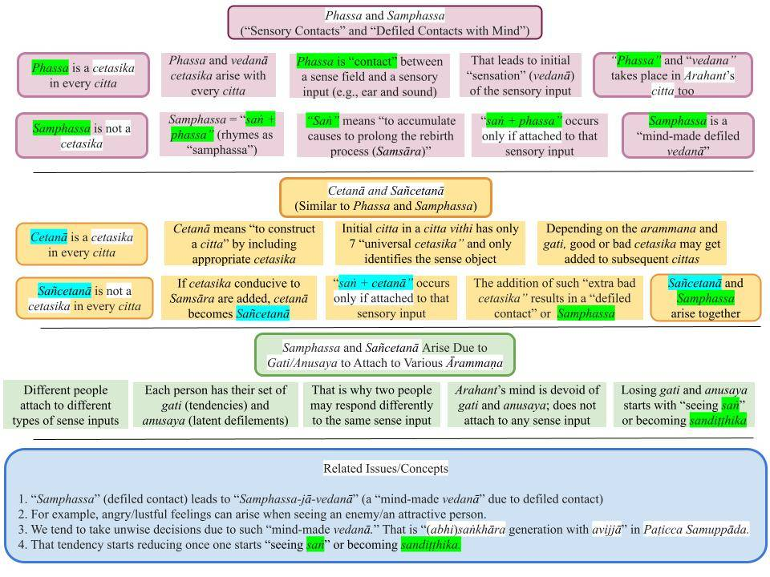

"Samphassa" must be used for "phassa" in "phassa paccayā vēdanā" in Akusala-Mula Paṭicca Samuppāda.
Revised November 6, 2018; June 2, 2019; re-written May 7, 2021

Download/Print: "12. Phassa and Samphassa"
Phassa and Samphassa - Incorrect Translations
1. No differentiation is made between "phassa" and "samphassa" in most English translations of Paṭicca samuppāda. Both words are translated as "contact" in English translations without making the distinction.
- For example, the "Paṭiccasamuppāda Sutta (SN 12.1)" provides the uddesa (utterance) version in Paṭicca samuppāda as "saḷāyatanapaccayā phasso." The niddesa version of that (brief description) appears in the following "Vibhaṅga Sutta (SN 12.2)" as "cakkhusamphasso, sotasamphasso, ghānasamphasso, jivhāsamphasso, kāyasamphasso, manosamphasso."
- However, no distinction is made in the translations of the above links. Both are translated as "contact."
- As we will see below, "samphassa" has a very different meaning than "phassa" and makes the connection of how our instinctive reactions to external sense experiences arise based on our "samsāric habits" or "gati."
Phassa Is in All Citta
2. When we see, hear, etc., a citta arises that recognize the sensory input. Seven cetasika (mental factors) arise with ANY citta, and phassa and vedanā are two. We will have no sensory experience without the phassa (contact) cetasika.
- When the mind contacts that image of the external object, a series of citta arises. We experience only the overall effect of millions of such cittās due to that contact.
- Some of the seven universal mental factors that arise with the citta instantaneously identify the object. These include vedanā and saññā. Both are universal cetasika.
- If samphassa takes place, there will be an additional, mind-made vedanā called "samphassa-jā-vedanā" as discussed below.
Samphassa - How Does It Arise?
3. An average human will form a like or a dislike for some of the sense inputs (but not for all).
- If a like or dislike is formed, then that sensory contact is "saṅ phassa"("saṅ" + "phassa," where "saṅ" are defilements (greed, anger, ignorance); see, "What is "San"?"). It rhymes as "samphassa."
- This "combination effect" or "Pāli sandhi" leads to the pronunciation of many "saṅ" words with an "m" sound: "saṅ" + "mā" to "sammā." In the same way, "saṅ" "yutta" to "samyutta," "saṅ" "bhava" to "sambhava," and "saṅ" "sāra" to "samsāra"; see, "List of “San” Words and Other Pāli Roots." In English texts, "Saṅ" in combined words may be written as San/Saṅ/Sañ/Sam.
- Thus, when one sees, hears, smells, tastes, or touches something, whether there will be any likes or dislikes towards that sensory experience depends on that person, or more specifically, the "gati" (habits/character) of that person.
Examples of Samphassa
4. Let us discuss some examples to illustrate how "samphassa" arises. First, let us look at the connection with those people/things in the world that we have special relationships with or what we "upādana," i.e., like to either keep close or stay away from.
- Think about the worst "enemy" you have. When you even think about that person X, you generate unpleasant feelings. But X's family will have loving thoughts about X. Here, you and X's child (for example) would have generated very different "samphassa" when thinking, seeing, and hearing about X.
- When you travel by car or bus and look out the window, you may see zillion things, but those are just "seeing"; you don't pay much attention to them. They are "phassa." But now, if you happen to see a beautiful house, it piques your interest, and you may even turn back and take another good look at it and even think about how nice it would be to live in a house like that. That is "samphassa."
5. A critical point is that one's perception of what is "valuable" can lead to "samphassa." Suppose someone inherits a valuable gem from his father. Every time he sees it or even thinks about it, he becomes happy. But his mind is also burdened by it since he is worried that he may lose it; he is keeping it in a safe and has put burglar alarms in the house to protect that gem.
- Suppose one day, he asks a professional to evaluate the gem and finds out that it is not a gem but a fake. He may not even believe that initially, but once confirmed, he will become "detached" from it. He will no longer keep it in the safe and may even throw it away in disgust.
- Now he may be generating neutral or hateful thoughts about the SAME OBJECT he once loved. Nothing changed about the "gem"; it is still the same object as before. What has changed is his PERCEPTION of the value of that object. Whereas he generated "samphassa" on thinking or seeing that object before, now he may generate just "phassa" (neutral feelings) or "samphassa" with quite the opposite feelings of disgust.
Phassa/Samphassa and Cetanā/Sañcetanā
6. Phassa and cetanā are both universal cetasika that arise with every citta. A citta vithi starts with an "undominated citta" but gets contaminated if the mind gets attached to the ārammaṇa. We do not experience individual cittās but only the cumulative effect of millions of cittās that arise in a second. As cittās get contaminated, asobhana (defiled) cetasika are incorporated by cetanā cetasika it turns into sañcetanā. That happens simultaneously with phassa leading to samphassa.
- If the “intention” does not involve lobha, dosa, or moha (avijjā), it is only a cetanā or “intention” to get something done. Here, kamma done is just an action without kammic consequences. For example, if one walks to the kitchen to get a glass of water, that is done with a neutral cetanā; the “intention” is to quench the thirst. It is NOT a sañcetanā. There is no "defiled contact" or "samphassa" either.
- However, almost all current English translations do not make that critical distinction. For example, sañcetanā in the "Sañcetanā Sutta (SN 27.7)" is translated as "intention," and samphassa in the "Samphassa Sutta (SN 18.4)" is translated as "contact." The translators do not understand the difference between Phassa/Samphassa and Cetanā/Sañcetanā.
- A cetanā becomes a sañcetanā (sañ + cetanā) -- and phassa becomes samphassa -- if it involves “sañ” or lobha, dosa, moha (avijjā.) See “San – A Critical Pāli Root” and “Details of Kamma – Intention, Who Is Affected, Kamma Patha.”
Phassa Can Turn to Samphassa in an Instant
7. Let us take another example that Waharaka Thero gave. This one clearly shows how the transition from "phassa" to "samphassa" can happen very quickly.
The following happened a long time ago in Sri Lanka. A mother had to go overseas when her son was less than a year old. She had been overseas for many years and returned to see her son. She had not even seen any pictures of the boy, who was now a teenager. When she gets home, she is told that the boy is visiting a neighbor, and she starts walking there. On the way, she bumps into a teenager; she admonishes the teenager for not paying attention and resumes walking. But then another person on the street says, "Don't you recognize your son? Well. How can you? You have been away all this time". Hearing that, she says, "Oh, is that my son?" and immediately runs back and hugs him.
- She saw the boy when he bumped into her and even got upset with him. But at that time, he was just a teenager to her. That "seeing" event involved "phassa."
- But when someone pointed out that it was her son, her perception of the boy took a giant leap instantly. Now she looks at the same boy with a new set of "mental baggage." Now it is not just a teenager but her son; attachment is involved. Now when she looks at him, "samphassa" is involved.
- While "phassa" is a natural sensory contact, "samphassa" is mind-made.
8. We can also see how "samphassa" leads to an intensified vēdanā or feelings. This is called "samphassa-jā-vēdanā" or "vēdanā arising due to samphassa." This "mind-made defiled vēdanā" is different from the universal vēdanā as we discussed in #7 above.
- She had neutral thoughts (may be even some annoyance) when the boy bumped into her and apologized. But when she learned it was her son, her feelings instantly turned to joy.
- To take it a bit further, if that teenager got hit by a car after several minutes, that joy would turn instantly to sorrow.
- These different types of "vēdanā" arise based on the type and level of "attachment" to a given object, in this case, the boy.
Samphassa/Sañcetanā - Connection to Gati
9. "Samphassa" is intimately connected to one's "gati" or habits, most of which come from our past lives, even though some may be strengthened or weakened by what we do in this life. We may even start forming new "gati" in this life. Note that "gati" is pronounced "gathi," like in "Thief."
- For example, a young lady looking at a dress may form a liking for it. Another person seeing his enemy will form a dislike. Upon hearing a song, a teenager may form a liking/craving for it, etc.
- This "contact with saṅ" (or samphassa) happens instantaneously. That initial samphassa arises automatically purely based on our "gati." But since our actions based on that initial reaction take some time, we still have time to control our speech or bodily actions. Even if bad thoughts come to our minds, we can stop speech or bodily actions. That is Kāyānupassanā in Satipatthāna meditation or Ānāpānasati.
- Many posts on this site discuss "gati," and at the fundamental level, both Ānapāna and Satipatthāna meditations are all about removing bad "gati" and cultivating good "gati"; see, "9. Key to Ānāpānasati – How to Change Habits and Character (Gati)".
An Arahant Has Phassa but Not Samphassa
10. Now, let us consider what happens when an Arahant sees or hears similar things (phassa or "contact" occurs.) He/she will see or hear the same thing as any other person.
- But an Arahant will not be attracted to it or repelled by it. There will be no samphassa. Thus, there will be no "samphassa jā vēdanā" either.
- Put another way, an Arahant sees, hears, etc., without bias or samphassa. He/she will also generate vēdanā, but not "vēdanā due to samphassa."
- An Arahant has removed all such defiled "gati," closely related to cravings or "āsava." An Arahant has removed all "āsava"; this is what is meant by "āsavakkhaya" at the Arahanthood. This is a technical detail that may not be clear to some; don't worry about it if it unclear yet.
- Samphassa cannot be removed with willpower. It gradually fades away as one attains higher stages of magga phala (starting with comprehending "saṅ" by becoming "Sandiṭṭhika"; see below.)
Samphassa Leads to Samphassa-jā-Vēdanā
11. Therefore, now we can see that the step "phassa paccayā vēdanā" in Akusala-Mula Paṭicca Samuppāda is the "uddesa version" and "samphassa paccayā samphassa-jā-vēdanā" is the "niddesa version;" see "Sutta Interpretation – Uddēsa, Niddēsa, Paṭiniddēsa."
- However, in most English translations, "phassa paccayā vēdanā" in Akusala-MulaPaṭicca Samuppāda is translated as "Contact is a condition for feeling" ("Paṭiccasamuppāda Sutta (SN 12.1)") and just below that (at the marker 3.6) "phassa nirodhā vedanā nirodho" is translated "When contact ceases, feeling ceases." after one attains Arahanthood. That INCORRECTLY implies an Arahant would not have feelings! However, an Arahant would have "vēdanā" but NOT "samphassa-jā-vēdanā."
- For an Arahant, there is only "phassa" or mere contact with the external sensory input. An Arahant will thus "see," "hear," "smell," "taste," or "feel" the same things as any other person. But an Arahant will not be attached or repulsed by that sensory experience.
- I have discussed many problems with translators directly translating the "uddesa versions" of key verses; see "Word-for-Word Translation of the Tipiṭaka."
- More details on how "samphassa" leads to samphassa-jā-vēdanā at: "Vedana (Feelings) Arise in Two Ways," "Vipāka Vēdanā and “Samphassa jā Vēdanā” in a Sensory Event," and "Dukkha Samudaya Starts With Samphassa-Jā-Vedanā."
Samphassa-jā-Vēdanā Starts to Fade Away When One Becomes "Sandiṭṭhika"
12. The defiled contacts ("samphassa") (and also defiled intentions or sañcetanā) start fading away when one becomes a Sotapanna Anugāmi.
- That happens when one starts comprehending the Noble Truths/Paṭicca Samuppāda/Tilakkhana or "seeing saṅ" or "sandiṭṭhika" (san diṭṭhi.)
- All posts in the new section on "Buddhism – In Charts."
Next, "Phassa paccayā Vedana….to Bhava", ..........
“Samphassa” deve ser usado no lugar de “phassa” na expressão “phassa paccayā vēdanā” no Akusala-Paṭicca Samuppāda.
Revisado em 6 de novembro de 2018; 2 de junho de 2019; reescrito em 7 de maio de 2021
Baixar/Imprimir: “12. Phassa e Samphassa”
Phassa e Samphassa – Traduções incorretas
1. Não é feita nenhuma diferenciação entre “Phassa” e “Samphassa” na maioria das traduções em inglês do Paṭicca Samuppāda. Ambas as palavras são traduzidas como “contato” nas traduções em inglês, sem que se faça essa distinção.
- Por exemplo, o “Paṭicca Samuppāda Sutta (SN 12.1)” apresenta a versão uddesa (enunciado) do Paṭicca Samuppāda como “saḷāyatanapaccayā phasso”. A versão niddesa (breve descrição) disso aparece no seguinte “Vibhaṅga Sutta (SN 12.2)” como “cakkhusamphasso, sotasamphasso, ghānasamphasso, jivhāsamphasso, kāyasamphasso, manosamphasso”.
- No entanto, não há distinção nas traduções dos links acima. Ambos são traduzidos como “contato”.
- Como veremos a seguir, “Samphassa” tem um significado muito diferente de “Phassa” e estabelece a conexão de como nossas reações instintivas às experiências sensoriais externas surgem com base em nossos “hábitos samsáricos” ou “Gati”.
Phassa Está Presente em Todos os Citta
2. Quando vemos, ouvimos etc., surge um Citta que reconhece o estímulo sensorial. Sete Cetasika (fatores mentais) surgem com QUALQUER Citta, e Phassa e Vedanā são dois deles. Não teremos nenhuma experiência sensorial sem o Cetasika Phassa (contato).
- Quando a mente entra em contato com a imagem do objeto externo, surge uma série de Citta. Experimentamos apenas o efeito geral de milhões desses Citta devido a esse contato.
- Alguns dos sete fatores mentais universais que surgem com o Citta identificam instantaneamente o objeto. Entre eles estão Vedanā e Saññā. Ambos são Cetasika universais.
- Se ocorrer Samphassa, haverá uma Vedanā adicional, criada pela mente, chamada “Samphassa-jā-Vedanā”, conforme discutido a seguir.
Samphassa — Como Ela Surge?
3. Um ser humano comum desenvolverá uma preferência ou aversão por alguns dos estímulos sensoriais (mas não por todos).
- Se uma preferência ou aversão for formada, então esse contato sensorial é “saṅ phassa” (“saṅ” + “Phassa”, onde “saṅ” são as impurezas (ganância, raiva, ignorância); veja “O que é ‘San’?”). Rima como “Samphassa”.
- Esse “efeito de combinação” ou “sandhi em Pālī” leva à pronúncia de muitas palavras com “saṅ” com um som de “m”: “saṅ” + “mā” forma “Sammā”. Da mesma forma, “saṅ” + “yutta” forma “samyutta”, “saṅ” + “Bhava” forma “sambhava” e “saṅ” + “sāra” forma “Saṃsāra”; consulte “Lista de palavras com ‘San’ e outras raízes em Pālī”. Em textos em inglês, “Saṅ” em palavras compostas pode ser escrito como San/Saṅ/Sañ/Sam.
- Assim, quando alguém vê, ouve, cheira, prova ou toca algo, o fato de haver ou não gostos ou desgostos em relação a essa experiência sensorial depende dessa pessoa ou, mais especificamente, da “Gati” (hábitos/caráter) dessa pessoa.
Exemplos de Samphassa
4. Vamos discutir alguns exemplos para ilustrar como “Samphassa” surge. Primeiro, vamos examinar a conexão com aquelas pessoas/coisas no mundo com as quais temos relações especiais ou com o que chamamos de “upādana”, ou seja, aquilo que gostamos de manter por perto ou de manter à distância.
- Pense no seu pior “inimigo”. Quando você sequer pensa nessa pessoa X, você gera sentimentos desagradáveis. Mas a família de X terá pensamentos afetuosos em relação a X. Nesse caso, você e o filho de X (por exemplo) teriam gerado “Samphassa” muito diferentes ao pensar, ver e ouvir sobre X.
- Quando você viaja de carro ou ônibus e olha pela janela, pode ver um zilhão de coisas, mas isso é apenas “ver”; você não presta muita atenção nelas. Elas são “Phassa”. Mas agora, se por acaso você vir uma casa bonita, isso desperta seu interesse, e você pode até se virar para dar uma boa olhada nela e até pensar em como seria bom morar em uma casa como aquela. Isso é “Samphassa”.
5. Um ponto crucial é que a percepção de cada um sobre o que é “valioso” pode levar ao “Samphassa”. Suponha que alguém herde uma joia valiosa de seu pai. Toda vez que a vê ou até mesmo pensa nela, fica feliz. Mas sua mente também fica sobrecarregada por isso, já que ele tem medo de perdê-la; ele a guarda em um cofre e instalou alarmes contra roubo na casa para proteger essa joia.
- Suponha que, um dia, ele peça a um profissional para avaliar a joia e descubra que não se trata de uma joia, mas de uma falsificação. Ele pode até não acreditar nisso inicialmente, mas, uma vez confirmado, ele se tornará “desapegado” dela. Ele não a manterá mais no cofre e pode até jogá-la fora com repulsa.
- Agora, ele pode estar gerando pensamentos neutros ou de ódio em relação ao MESMO OBJETO que antes amava. Nada mudou na “gema”; ela continua sendo o mesmo objeto de antes. O que mudou foi sua PERCEPÇÃO do valor desse objeto. Enquanto antes ele gerava “Samphassa” ao pensar ou ver aquele objeto, agora ele pode gerar apenas “Phassa” (sentimentos neutros) ou “Samphassa” com sentimentos totalmente opostos de repulsa.
Phassa/Samphassa e Cetanā/Sañcetanā
6. Phassa e Cetanā são ambos Cetasikas universais que surgem com cada Citta. Um Citta vithi começa com um “Citta não dominado”, mas fica contaminado se a mente se apegar ao Ārammaṇa. Não experimentamos citta individuais, mas apenas o efeito cumulativo de milhões de citta que surgem em um segundo. À medida que os citta se contaminam, os Cetasika asobhana (impuros) são incorporados pelo Cetasika Cetanā, transformando-se em sañcetanā. Isso ocorre simultaneamente com o Phassa, levando ao Samphassa.
- Se a “intenção” não envolver Lobha, Dosa ou Moha (Avijjā), trata-se apenas de uma Cetanā ou “intenção” de realizar algo. Aqui, o Kamma realizado é apenas uma ação sem consequências kármicas. Por exemplo, se alguém caminha até a cozinha para pegar um copo d’água, isso é feito com uma Cetanā neutra; a “intenção” é saciar a sede. NÃO é um sañcetanā. Também não há “contato impuro” ou “Samphassa”.
- No entanto, quase todas as traduções atuais para o inglês não fazem essa distinção fundamental. Por exemplo, sañcetanā no “Sañcetanā Sutta (SN 27.7)” é traduzido como “intenção”, e Samphassa no “Samphassa Sutta (SN 18.4)” é traduzido como “contato”. Os tradutores não compreendem a diferença entre Phassa/Samphassa e Cetanā/Sañcetanā.
- Um Cetanā torna-se um sañcetanā (sañ + cetanā) — e Phassa torna-se Samphassa — se envolver “sañ” ou Lobha, Dosa, Moha (Avijjā). Veja “San – Uma Raiz Pālī Crítica” e “Detalhes do Kamma – Intenção, Quem é Afetado, Kamma Patha”.
Phassa pode se transformar em Samphassa em um instante
7. Vamos considerar outro exemplo dado por Waharaka Thero. Este mostra claramente como a transição de “Phassa” para “Samphassa” pode ocorrer muito rapidamente.
O seguinte aconteceu há muito tempo no Sri Lanka. Uma mãe precisou viajar para o exterior quando seu filho tinha menos de um ano de idade. Ela ficou no exterior por muitos anos e voltou para ver o filho. Ela nem sequer tinha visto fotos do menino, que agora era um adolescente. Ao chegar em casa, ela é informada de que o menino está visitando um vizinho e começa a caminhar até lá. No caminho, ela esbarra em um adolescente; repreende-o por não prestar atenção e continua andando. Mas então outra pessoa na rua diz: “Você não reconhece seu filho? Bem, como poderia? Você esteve longe todo esse tempo”. Ao ouvir isso, ela diz: “Ah, esse é meu filho?”, e imediatamente corre de volta e o abraça.
- Ela viu o menino quando ele esbarrou nela e até ficou brava com ele. Mas, naquele momento, ele era apenas um adolescente para ela. Esse evento de “ver” envolveu “Phassa”.
- Mas quando alguém apontou que era seu filho, a percepção que ela tinha do menino deu um salto gigantesco instantaneamente. Agora ela olha para o mesmo menino com um novo conjunto de “bagagem mental”. Agora não é apenas um adolescente, mas seu filho; há apego envolvido. Agora, quando ela olha para ele, há “Samphassa” envolvido.
- Enquanto “Phassa” é um contato sensorial natural, “Samphassa” é criado pela mente.
8. Também podemos ver como “Samphassa” leva a um vēdanā ou sentimentos intensificados. Isso é chamado de “Samphassa-jā-vēdanā” ou “vēdanā que surge devido a Samphassa”. Essa “vēdanā impura criada pela mente” é diferente da vēdanā universal, conforme discutimos no item 7 acima.
- Ela teve pensamentos neutros (talvez até algum aborrecimento) quando o menino esbarrou nela e pediu desculpas. Mas, ao descobrir que era seu filho, suas sensações se transformaram instantaneamente em alegria.
- Para levar isso um pouco mais adiante, se aquele adolescente fosse atropelado por um carro alguns minutos depois, essa alegria se transformaria instantaneamente em tristeza.
- Esses diferentes tipos de “vēdanā” surgem com base no tipo e no nível de “apego” a um determinado objeto, neste caso, o menino.
Samphassa/Sañcetanā – Conexão com a Gati
9. “Samphassa” está intimamente ligado à “Gati” de cada um, ou seja, aos hábitos, a maioria dos quais vem de nossas vidas passadas, embora alguns possam ser fortalecidos ou enfraquecidos pelo que fazemos nesta vida. Podemos até começar a formar novos “Gati” nesta vida. Observe que “Gati” se pronuncia “Gathi”, como em “Thief”.
- Por exemplo, uma jovem que olha para um vestido pode desenvolver um gosto por ele. Outra pessoa, ao ver seu inimigo, desenvolverá aversão. Ao ouvir uma música, um adolescente pode desenvolver um gosto ou desejo por ela, etc.
- Esse “contato com saṅ” (ou Samphassa) ocorre instantaneamente. Esse Samphassa inicial surge automaticamente, baseado exclusivamente em nossa “Gati”. Mas, como nossas ações baseadas nessa reação inicial levam algum tempo, ainda temos tempo para controlar nossa fala ou nossas ações corporais. Mesmo que pensamentos ruins venham à nossa mente, podemos interromper a fala ou as ações corporais. Isso é Kāyānupassanā na meditação Satipaṭṭhāna ou Ānāpānasati.
- Muitos ensaios neste site discutem a “Gati” e, em um nível fundamental, tanto a meditação Ānapāna quanto a meditação Satipaṭṭhāna tratam justamente de remover a “Gati” ruim e cultivar a “Gati” boa; veja “9. Chave para Ānāpānasati – Como Mudar Hábitos e Caráter (Gati)”.
Um Arahant tem Phassa, mas não Samphassa
10. Agora, vamos considerar o que acontece quando um Arahant vê ou ouve coisas semelhantes (Phassa ou “contato” ocorre). Ele ou ela verá ou ouvirá a mesma coisa que qualquer outra pessoa.
- Mas um Arahant não se sentirá atraído nem repelido por isso. Não haverá Samphassa. Assim, também não haverá “Samphassa jā vēdanā”.
- Dito de outra forma, um Arahant vê, ouve etc., sem preconceito ou Samphassa. Ele ou ela também gerará vēdanā, mas não “vēdanā devido a Samphassa”.
- Um Arahant removeu todos esses “gati” contaminados, intimamente relacionados aos desejos ou “Āsava”. Um Arahant removeu todos os “Āsava”; é isso que se entende por “āsavakkhaya” na condição de Arahant. Esse é um detalhe técnico que pode não ficar claro para alguns; não se preocupe com isso se ainda não estiver claro.
- O Samphassa não pode ser removido com força de vontade. Ele desaparece gradualmente à medida que se alcança estágios mais elevados de Magga Phala (começando pela compreensão de “saṅ” ao se tornar “Sandiṭṭhika”; veja abaixo).
Samphassa leva a samphassa-jā-vēdanā
11. Portanto, agora podemos ver que a etapa “phassa paccayā vēdanā” no Akusala-Mula Paṭicca Samuppāda é a “versão uddesa” e “samphassa paccayā samphassa-jā-vēdanā” é a “versão niddesa”; veja “Interpretação dos Suttā – Uddēsa, Niddēsa, Paṭiniddēsa”.
- No entanto, na maioria das traduções em inglês, “Phassa Paccayā Vēdanā” no Akusala-Mula Samuppāda é traduzido como “O contato é uma condição para a sensação” (“Paṭiccasamuppāda Sutta (SN 12.1)”) e, logo abaixo disso (no marcador 3.6), “Phassa nirodho Vedanā nirodho” é traduzido como “Quando o contato cessa, a sensação cessa.” após se atingir o estado de Arahant. Isso implica, INCORRETAMENTE, que um Arahant não teria sensações! No entanto, um Arahant teria “vēdanā”, mas NÃO “samphassa-jā-vēdanā”.
- Para um Arahant, há apenas “Phassa” ou mero contato com o estímulo sensorial externo. Um Arahant, portanto, “verá”, “ouvirá”, “cheirará”, “provará” ou “sentirá” as mesmas coisas que qualquer outra pessoa. Mas um Arahant não ficará apegado nem repugnado por essa experiência sensorial.
- Já discuti muitos problemas com tradutores que traduzem diretamente as “versões uddesa” de versos-chave; veja “Tradução palavra por palavra do Tipiṭaka”.
- Mais detalhes sobre como “Samphassa” leva a Samphassa-jā-vēdanā em: “Vedanā (Sensações) Surgem de Duas Maneiras”, “Vipāka Vēdanā e ‘Samphassa jā Vēdanā’ em um Evento Sensorial” e “Dukkha Samudaya Começa com Samphassa-Jā-Vedanā”.
O Samphassa-jā-vēdanā começa a desaparecer quando a pessoa se torna “sandiṭṭhika”
12. Os contatos impuros (“Samphassa”) (e também as intenções impuras ou sañcetanā) começam a desaparecer quando a pessoa se torna um Sotāpanna Anugāmi.
- Isso acontece quando se começa a compreender as Nobres Verdades/Paṭicca Samuppāda/Tilakkhaṇa ou a “ver saṅ” ou “sandiṭṭhika” (san diṭṭhi).
- Todos os ensaios na nova seção sobre “Buddhismo – Em Gráficos”.
A seguir, “Phassa Paccayā Vedanā… até Bhava”, ..........